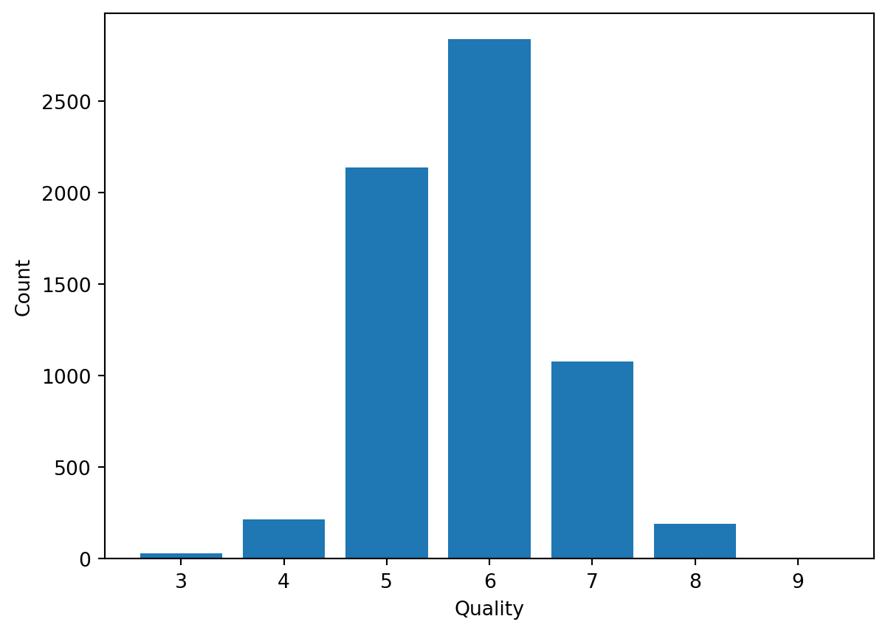
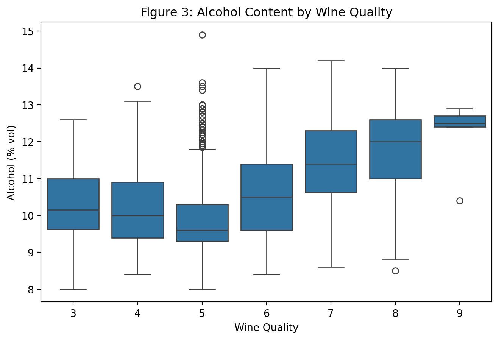
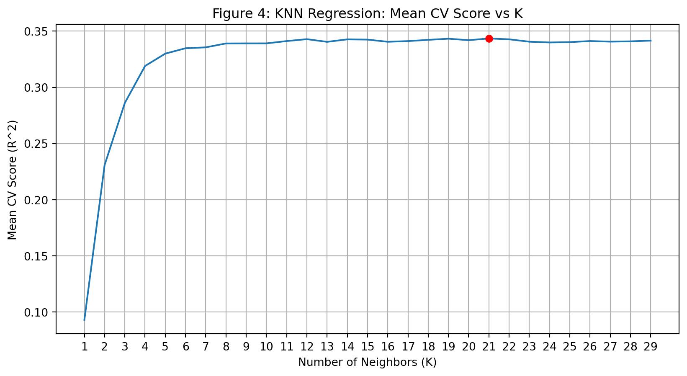

| fixed_acidity | volatile_acidity | citric_acid | residual_sugar | chlorides | free_sulfur_dioxide | total_sulfur_dioxide | density | pH | sulphates | alcohol | quality | |
|---|---|---|---|---|---|---|---|---|---|---|---|---|
| 0 | 7.4 | 0.70 | 0.00 | 1.9 | 0.076 | 11.0 | 34.0 | 0.9978 | 3.51 | 0.56 | 9.4 | 5 |
| 1 | 7.8 | 0.88 | 0.00 | 2.6 | 0.098 | 25.0 | 67.0 | 0.9968 | 3.20 | 0.68 | 9.8 | 5 |
| 2 | 7.8 | 0.76 | 0.04 | 2.3 | 0.092 | 15.0 | 54.0 | 0.9970 | 3.26 | 0.65 | 9.8 | 5 |
| 3 | 11.2 | 0.28 | 0.56 | 1.9 | 0.075 | 17.0 | 60.0 | 0.9980 | 3.16 | 0.58 | 9.8 | 6 |
| 4 | 7.4 | 0.70 | 0.00 | 1.9 | 0.076 | 11.0 | 34.0 | 0.9978 | 3.51 | 0.56 | 9.4 | 5 |
Predicting Wine Quality from Physicochemical Properties
Summary
This project investigates whether the quality of wine can be predicted from its physicochemical properties using a K-Nearest Neighbors (KNN) regression approach. We use the Wine Quality dataset from the UCI Machine Learning Repository (Cortez et al. 2009), which contains physicochemical measurements and sensory quality ratings for Portuguese “Vinho Verde” wine samples. We train a KNN regression model to predict wine quality scores from features such as alcohol content, acidity, pH, and residual sugar.
Introduction
Wine quality evaluation has historically been a very subjective process that mainly relies on human tasters’ sensory skills to evaluate intricate flavor profiles, aromas, and textures. Although human evaluation is crucial, it can be costly, time-consuming, and biased. Researchers and winemakers are increasingly using objective measurements - the physicochemical characteristics of wine - to supplement sensory testing. These properties refer to the quantifiable chemical and physical attributes of the liquid, such as its alcohol content, acidity levels, pH, and residual sugar. We can investigate the connection between a wine’s chemical composition and its perceived human taste by examining such objective metrics.
This leads us to our primary predictive question: Can we predict the quality score of a wine based on its physicochemical properties?
To answer this question, we utilize the Wine Quality dataset from the UCI Machine Learning Repository (Cortez et al., 2009; Dua & Graff, 2019). The sensory and chemical information in this dataset comes from samples of “Vinho Verde,” a well-known wine made in Portugal’s Minho region. Each wine sample in the dataset includes 11 continuous physicochemical characteristics, alongside a target variable: a sensory quality rating assessed by human experts on an integer scale from 3 to 10. We merge the red and white wine datasets into a single, comprehensive dataset for the purposes of this analysis.
To model the relationship between the chemical inputs and the quality output, we will employ a K-Nearest Neighbors (KNN) regression approach (Hastie, Tibshirani, and Friedman 2009). By standardizing the chemical features and using cross-validation, our model will attempt to predict a wine’s quality score based on the ratings of wines with the most similar chemical profiles.
Methods & Results
Data Loading
We load the Wine Quality dataset directly from the UCI Machine Learning Repository using the ucimlrepo package. This ensures the data is reproducibly downloaded from the original source.
Dataset shape: (6497, 12)
Column types:
fixed_acidity float64
volatile_acidity float64
citric_acid float64
residual_sugar float64
chlorides float64
free_sulfur_dioxide float64
total_sulfur_dioxide float64
density float64
pH float64
sulphates float64
alcohol float64
quality int64
dtype: object
Missing values:
fixed_acidity 0
volatile_acidity 0
citric_acid 0
residual_sugar 0
chlorides 0
free_sulfur_dioxide 0
total_sulfur_dioxide 0
density 0
pH 0
sulphates 0
alcohol 0
quality 0
dtype: int64
Quality score distribution:
quality
3 30
4 216
5 2138
6 2836
7 1079
8 193
9 5
Name: count, dtype: int64Data
| Variable | Role | Type | Missing | Description |
|---|---|---|---|---|
| fixed_acidity | Feature | Continuous | No | Amount of fixed (non-volatile) acids; mainly tartaric acid (g/dm³) |
| volatile_acidity | Feature | Continuous | No | Amount of acetic acid; high levels lead to a vinegar taste (g/dm³) |
| citric_acid | Feature | Continuous | No | Small quantities add freshness and flavour (g/dm³) |
| residual_sugar | Feature | Continuous | No | Sugar remaining after fermentation stops (g/dm³) |
| chlorides | Feature | Continuous | No | Amount of salt in the wine (g/dm³) |
| free_sulfur_dioxide | Feature | Continuous | No | Free form of SO₂; prevents microbial growth and oxidation (mg/dm³) |
| total_sulfur_dioxide | Feature | Continuous | No | Total SO₂ (free + bound); detectable above 50 mg/L (mg/dm³) |
| density | Feature | Continuous | No | Density of the wine, close to water depending on alcohol/sugar content (g/cm³) |
| pH | Feature | Continuous | No | Acidity on a 0–14 scale; most wines fall between 3–4 |
| sulphates | Feature | Continuous | No | Additive contributing to SO₂ levels; acts as antimicrobial agent (g/dm³) |
| alcohol | Feature | Continuous | No | Percentage of alcohol by volume (% vol) |
| quality | Target | Ordinal | No | Wine quality score assigned by sensory evaluation (integer, 0–10) |
The Wine Quality dataset comes relatively clean with no missing values. We combine the features and target into a single DataFrame and save the processed data for downstream analysis. The dataset has 6497 rows and 12 columns.
Table 1 contains the physicochemical properties and sensory quality ratings of red and white wines found within the dataset. Each row represents a single wine sample, with 11 continuous features describing chemical characteristics such as fixed acidity, volatile acidity, citric acid, residual sugar, chlorides, sulfur dioxide, density, pH level, sulphates, and alchohol levels. The target variable, quality, is an ordinal score from 3-9 assigned by human tasters based on sensory evaluation.
Exploratory Data Analysis
Summary Statistics
| fixed_acidity | volatile_acidity | citric_acid | residual_sugar | chlorides | free_sulfur_dioxide | total_sulfur_dioxide | density | pH | sulphates | alcohol | quality |
|---|---|---|---|---|---|---|---|---|---|---|---|
| 6497 | 6497 | 6497 | 6497 | 6497 | 6497 | 6497 | 6497 | 6497 | 6497 | 6497 | 6497 |
| 7.21531 | 0.339666 | 0.318633 | 5.44324 | 0.0560339 | 30.5253 | 115.745 | 0.994697 | 3.2185 | 0.531268 | 10.4918 | 5.81838 |
| 1.29643 | 0.164636 | 0.145318 | 4.7578 | 0.0350336 | 17.7494 | 56.5219 | 0.00299867 | 0.160787 | 0.148806 | 1.19271 | 0.873255 |
| 3.8 | 0.08 | 0 | 0.6 | 0.009 | 1 | 6 | 0.98711 | 2.72 | 0.22 | 8 | 3 |
| 6.4 | 0.23 | 0.25 | 1.8 | 0.038 | 17 | 77 | 0.99234 | 3.11 | 0.43 | 9.5 | 5 |
| 7 | 0.29 | 0.31 | 3 | 0.047 | 29 | 118 | 0.99489 | 3.21 | 0.51 | 10.3 | 6 |
| 7.7 | 0.4 | 0.39 | 8.1 | 0.065 | 41 | 156 | 0.99699 | 3.32 | 0.6 | 11.3 | 6 |
| 15.9 | 1.58 | 1.66 | 65.8 | 0.611 | 289 | 440 | 1.03898 | 4.01 | 2 | 14.9 | 9 |
Above, Table 2 below provides summary statistics for all numeric features in the dataset, including count, mean, standard deviation, minimum, maximum, and quartiles (25%, 50%, 75%) for each variable. This provides a quick glance at the general spread and range of the features in the dataset.
Most wines have moderate acidity, low volatile acidity, and around 9-11% alcohol, with a median quality of 6.
Distribution of Wine Quality

Figure 1 is a distrubution of wine quality scores as a bar chart, showing how many wines in the dataset fall into each quality category.
The target variable, Wine Quality, is approximately normally distributed, with a mean of 5.82 and a mode of 6. Most wines fall in the mid-quality range of 4.95 - 6.69, indicating that extremely low or high quality wines are less common.
Correlation Heatmap of Wine Features
This correlation heatmap visualizes the correlation between all features within the wine dataset.
We can see that the features density and alcohol have a strong inverse relationship (-0.69). total_sulfur_dioxide is strongly correlated with free_sulfur_dioxide (+0.72), which makes sense since the free sulfur dioxide is included in the total amount. residual_sugar shows moderate correlations with total_sulfur_dioxide, free_sulfur_dioxide, and density. The target variable quality has its strongest relationships with alcohol (+0.44) and volatile_acidity (-0.27), suggesting that these features may be particularly important for predicting wine quality.

Correlation of Alcohol and Quality
The box plots show the distribution of alcohol content for each wine score.
We can observe a slight positive correlation between Wine Quality and alcohol content. Higher-quality wines (7, 8, 9) generally have higher mean alcohol levels. Interestingly, the mean alcohol content decreases slightly for lower-quality wines (3–5) and then begins to increase from quality 6 onward.

Regression Analysis
We will perform K-Nearest Neighbors (KNN) regression to predict wine quality based on the chemical features of the wines. The dataset will be split into a training set and a 30% test set, and a pipeline will be used to preprocess and scale all features using scikit-learn (Pedregosa et al., 2011). We will then conduct a grid search to select the optimal number of neighbors (K) and evaluate the model’s performance on the test set to assess its predictive accuracy.
Splitting the Data into Training & Testing Sets
The dataset will be split into 70% training data and 30% test data
X_train size: (4547, 11)
X_test size: (1950, 11)| fixed_acidity | volatile_acidity | citric_acid | residual_sugar | chlorides | free_sulfur_dioxide | total_sulfur_dioxide | density | pH | sulphates | alcohol | |
|---|---|---|---|---|---|---|---|---|---|---|---|
| 2457 | 6.7 | 0.22 | 0.39 | 10.2 | 0.038 | 60.0 | 149.0 | 0.99725 | 3.17 | 0.54 | 10.0 |
| 524 | 9.2 | 0.43 | 0.49 | 2.4 | 0.086 | 23.0 | 116.0 | 0.99760 | 3.23 | 0.64 | 9.5 |
| 4551 | 6.1 | 0.27 | 0.25 | 1.8 | 0.041 | 9.0 | 109.0 | 0.99290 | 3.08 | 0.54 | 9.0 |
| 5954 | 6.4 | 0.31 | 0.28 | 2.5 | 0.039 | 34.0 | 137.0 | 0.98946 | 3.22 | 0.38 | 12.7 |
| 3759 | 6.0 | 0.33 | 0.38 | 9.7 | 0.040 | 29.0 | 124.0 | 0.99540 | 3.47 | 0.48 | 11.0 |
Creating a Pipeline
Since all the features in our dataset are numeric but may have different ranges and units, we will standardize them so that each feature contributes equally to the distance calculations in the K-Nearest Neighbors model. This scaling step ensures that features with larger numerical values do not dominate the model and allows the algorithm to measure similarity between samples more accurately.
Pipeline(steps=[('standardscaler', StandardScaler()),
('kneighborsregressor', KNeighborsRegressor())])In a Jupyter environment, please rerun this cell to show the HTML representation or trust the notebook. On GitHub, the HTML representation is unable to render, please try loading this page with nbviewer.org.
Parameters
Parameters
Parameters
Grid Search for best K with Cross Validation
We will perform a grid seearch to identify the optimal number of neighbours (K) for the K-Nearest Neighbors regression model. This involves evaluating a range of K values between 1 and 29 using cross validation on the training set to measure model performance. The best performing value of K will be used to fit the final model and evaluate its performance on the test set,
Best Model: Pipeline(steps=[('standardscaler', StandardScaler()),
('kneighborsregressor', KNeighborsRegressor(n_neighbors=21))])
Best K: 21
Best CV Score: 0.34352
Best Train Score: 0.41222Table 2: Results of Grid Search Cross Validation| params | mean_test_score | std_test_score | mean_train_score | std_train_score | |
|---|---|---|---|---|---|
| 0 | {'kneighborsregressor__n_neighbors': 1} | 0.092826 | 0.069927 | 1.000000 | 0.000000 |
| 1 | {'kneighborsregressor__n_neighbors': 2} | 0.230754 | 0.038078 | 0.779557 | 0.003860 |
| 2 | {'kneighborsregressor__n_neighbors': 3} | 0.286078 | 0.026086 | 0.668196 | 0.002550 |
| 3 | {'kneighborsregressor__n_neighbors': 4} | 0.319000 | 0.023478 | 0.605030 | 0.005425 |
| 4 | {'kneighborsregressor__n_neighbors': 5} | 0.330007 | 0.021589 | 0.564269 | 0.006124 |
| 5 | {'kneighborsregressor__n_neighbors': 6} | 0.334799 | 0.027805 | 0.536615 | 0.004802 |
| 6 | {'kneighborsregressor__n_neighbors': 7} | 0.335600 | 0.031329 | 0.515438 | 0.003305 |
| 7 | {'kneighborsregressor__n_neighbors': 8} | 0.339080 | 0.034541 | 0.498159 | 0.005880 |
| 8 | {'kneighborsregressor__n_neighbors': 9} | 0.339135 | 0.036526 | 0.481017 | 0.007277 |
| 9 | {'kneighborsregressor__n_neighbors': 10} | 0.339148 | 0.034313 | 0.469061 | 0.007079 |
| 10 | {'kneighborsregressor__n_neighbors': 11} | 0.341202 | 0.032866 | 0.457831 | 0.006933 |
| 11 | {'kneighborsregressor__n_neighbors': 12} | 0.342900 | 0.033049 | 0.448369 | 0.007094 |
| 12 | {'kneighborsregressor__n_neighbors': 13} | 0.340503 | 0.032321 | 0.440760 | 0.005998 |
| 13 | {'kneighborsregressor__n_neighbors': 14} | 0.342719 | 0.032349 | 0.434649 | 0.006146 |
| 14 | {'kneighborsregressor__n_neighbors': 15} | 0.342510 | 0.033861 | 0.428574 | 0.007233 |
| 15 | {'kneighborsregressor__n_neighbors': 16} | 0.340572 | 0.034144 | 0.423658 | 0.007189 |
| 16 | {'kneighborsregressor__n_neighbors': 17} | 0.341174 | 0.031943 | 0.419360 | 0.007718 |
| 17 | {'kneighborsregressor__n_neighbors': 18} | 0.342285 | 0.029977 | 0.415777 | 0.007309 |
| 18 | {'kneighborsregressor__n_neighbors': 19} | 0.343315 | 0.027831 | 0.412036 | 0.007819 |
| 19 | {'kneighborsregressor__n_neighbors': 20} | 0.341989 | 0.025687 | 0.409032 | 0.007432 |
| 20 | {'kneighborsregressor__n_neighbors': 21} | 0.343521 | 0.023684 | 0.406140 | 0.007375 |
| 21 | {'kneighborsregressor__n_neighbors': 22} | 0.342767 | 0.022638 | 0.403150 | 0.007853 |
| 22 | {'kneighborsregressor__n_neighbors': 23} | 0.340639 | 0.021639 | 0.399454 | 0.007989 |
| 23 | {'kneighborsregressor__n_neighbors': 24} | 0.339971 | 0.020606 | 0.396652 | 0.006926 |
| 24 | {'kneighborsregressor__n_neighbors': 25} | 0.340255 | 0.018380 | 0.393898 | 0.006990 |
| 25 | {'kneighborsregressor__n_neighbors': 26} | 0.341216 | 0.017916 | 0.391189 | 0.006672 |
| 26 | {'kneighborsregressor__n_neighbors': 27} | 0.340690 | 0.017444 | 0.389025 | 0.006448 |
| 27 | {'kneighborsregressor__n_neighbors': 28} | 0.340953 | 0.017448 | 0.387520 | 0.006708 |
| 28 | {'kneighborsregressor__n_neighbors': 29} | 0.341590 | 0.016661 | 0.385115 | 0.006346 |

Best Model: Pipeline(steps=[('standardscaler', StandardScaler()),
('kneighborsregressor', KNeighborsRegressor(n_neighbors=21))])
Best K: 21
Best CV Score: 0.34352
Best Train Score: 0.41222The best value of K is 21, providing a CV score of 0.343 and training score of 0.412.
Evaluating on the Test Set
After selecting the optimal value of K = 21, we will fit the final K-Nearest Neighbors model on the training set and evaluate the model performance on unseen data (test set). We will use R^2 to assess the quality of the predictions.
Test R^2 Score: 0.34658Mean CV R^2 Score: 0.34352
Train R^2 Score: 0.41222
Test R^2 Score: 0.34658Discussion
Summary of Findings
In this project, we aimed to predict the sensory quality of “Vinho Verde” wine based on 11 physicochemical properties using a K-Nearest Neighbors (KNN) regression model. After standardizing the features and performing a grid search with cross-validation, we identified the optimal number of neighbors to be \(K = 21\). Evaluating this tuned model on our unseen test set yielded an \(R^2\) score of 0.34658. This indicates that our model explains approximately 34.7% of the variance in wine quality scores.
Were the Results Expected?
While an \(R^2\) score of 0.347 demonstrates a positive, measurable relationship between the chemical properties and quality, it highlights a relatively modest predictive performance. These results are not entirely surprising. As indicated by our exploratory data analysis, most physicochemical features had weak linear correlations with the quality score, with alcohol content (+0.44) and volatile acidity (-0.27) being the strongest predictors. Furthermore, wine tasting is an inherently subjective and highly complex sensory experience. A human’s perception of “quality” is influenced by intricate chemical interactions, aromatic compounds, and balance, which may not be fully captured by 11 basic chemical measurements or a simple distance-based algorithm like KNN.
Impact of Findings
Despite the modest accuracy, establishing this baseline relationship holds practical value for the wine industry. For wine producers and vineyards, predictive modeling can serve as an objective, early-stage screening tool. While it cannot entirely replace expert sommeliers or sensory panels, a chemical-based predictive model could be used during the fermentation and blending processes to flag potentially low-quality batches early on, saving time and resources in quality control. For consumers, quantifying these metrics paves the way for a more consistent product on store shelves.
Future Questions and Next Steps
The limitations of this study open the door to several promising avenues for future research:
- Model Complexity: KNN treats all standardized features with equal weight when calculating distances. Future projects should explore more complex, tree-based models (such as Random Forests or Gradient Boosting) that can better capture non-linear relationships and interactions between complex chemical compounds.
- Feature Importance: Exploring algorithms that provide feature importance scores could help winemakers pinpoint exactly which chemical balances (e.g., the ratio of residual sugar to acidity) have the greatest impact on human taste.
- Dataset Segmentation: Red and white wines have fundamentally different chemical profiles and sensory expectations. A logical next step would be to separate the dataset and train distinct models for red and white wines to see if predictive accuracy improves when the wine types are isolated.
References
Cortez, P., Cerdeira, A., Almeida, F., Matos, T., & Reis, J. (2009). Modeling wine preferences by data mining from physicochemical properties. Decision Support Systems, 47(4), 547–553. https://doi.org/10.1016/j.dss.2009.05.016
Dua, D., & Graff, C. (2019). UCI Machine Learning Repository. University of California, Irvine, School of Information and Computer Sciences. https://archive.ics.uci.edu/ml
Hastie, T., Tibshirani, R., & Friedman, J. (2009). The elements of statistical learning: Data mining, inference, and prediction (2nd ed.). Springer. https://doi.org/10.1007/978-0-387-84858-7
Pedregosa, F., Varoquaux, G., Gramfort, A., Michel, V., Thirion, B., Grisel, O., Blondel, M., Prettenhofer, P., Weiss, R., Dubourg, V., Vanderplas, J., Passos, A., Cournapeau, D., Brucher, M., Perrot, M., & Duchesnay, É. (2011). Scikit-learn: Machine learning in Python. Journal of Machine Learning Research, 12, 2825–2830.
References
Cortez, Paulo, António Cerdeira, Fernando Almeida, Telmo Matos, and José Reis. 2009. “Modeling Wine Preferences by Data Mining from Physicochemical Properties.” Decision Support Systems 47 (4): 547–53. https://doi.org/https://doi.org/10.1016/j.dss.2009.05.016.
Hastie, Trevor, Robert Tibshirani, and Jerome Friedman. 2009. The Elements of Statistical Learning, Second Edition : Data Mining, Inference, and Prediction. 2nd ed. New York: Springer.